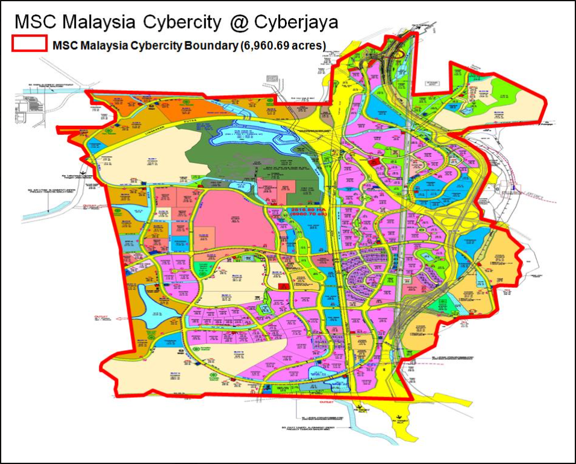

Navigate through Cyberjaya using the map below to discover key locations, landmarks, and amenities that make this city a hub of innovation and lifestyle. Click on the markers for more information about each location.
For more detailed information, visit this official website.